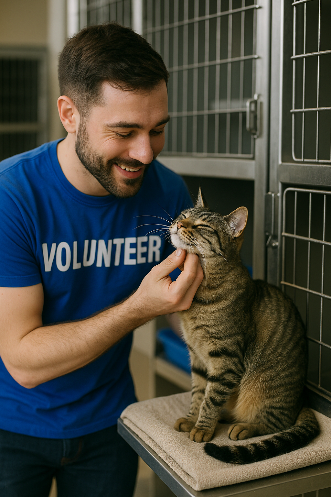
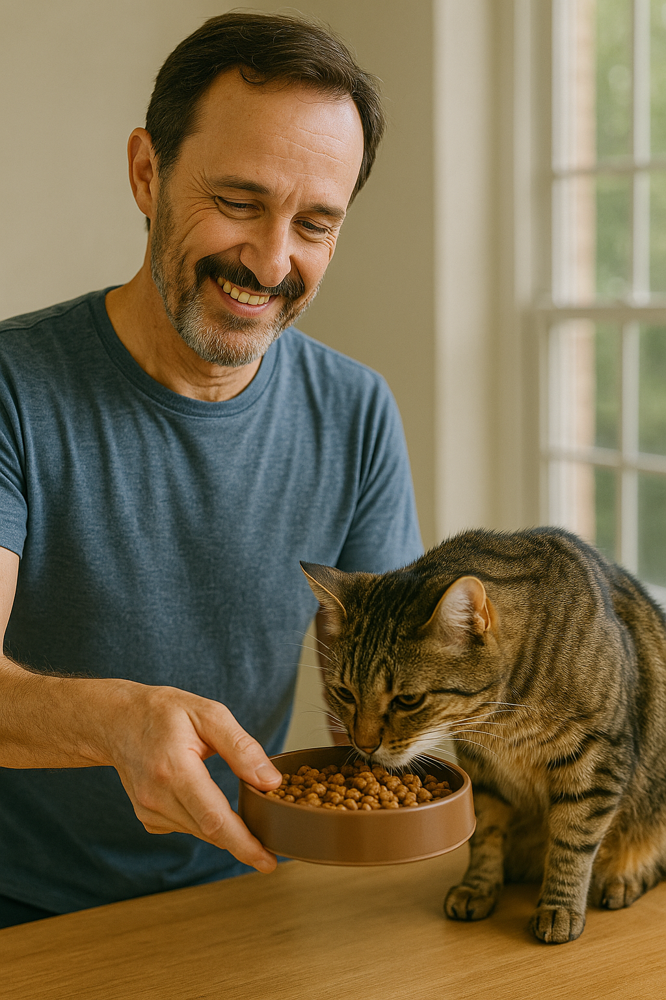
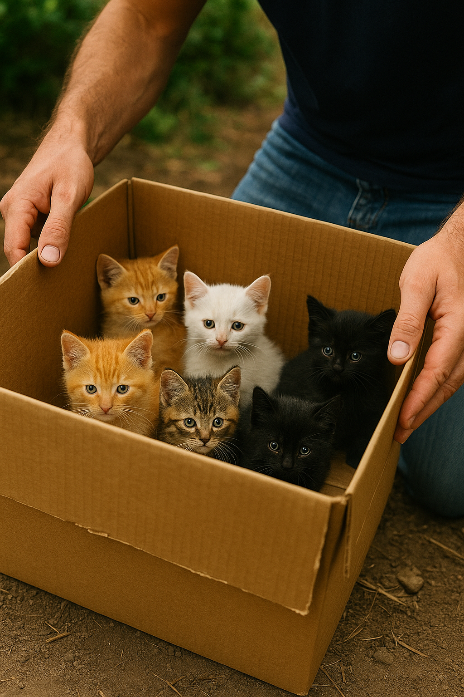

Voluntariado
Ser voluntário na FELINONG é uma oportunidade única de fazer a diferença na vida de gatos resgatados.
- Alimentação e cuidados diários
- Limpeza e higienização
- Transporte para clínicas veterinárias
- Eventos de adoção e socialização

Como Doar
Sua doação é essencial! Aceitamos doações financeiras e materiais:
- Ração e alimentos
- Medicamentos
- Caixas de transporte
- Produtos de limpeza

Formas de doação:
- PIX: felinong@ong.org
- Depósito bancário: Banco do Brasil, Ag. 1234, Conta: 56789-0
- Entrega presencial em nossa sede
Resgates Recentes

Esses gatinhos foram recentemente resgatados e agora estão recebendo todo o cuidado necessário. Em breve, estarão disponíveis para adoção responsável!